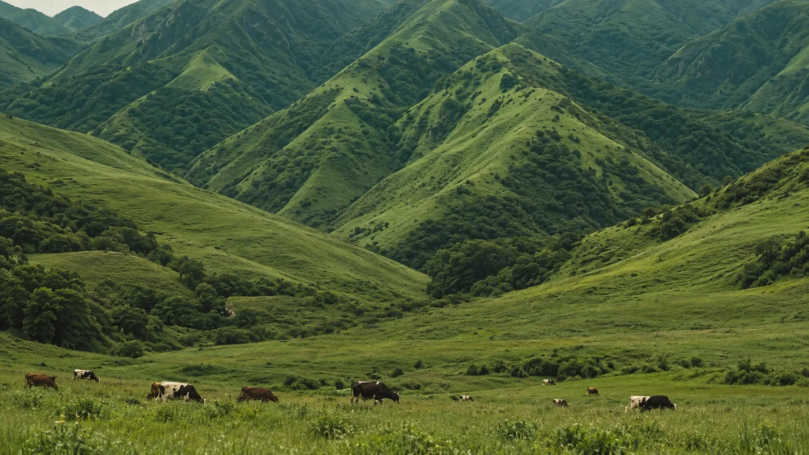
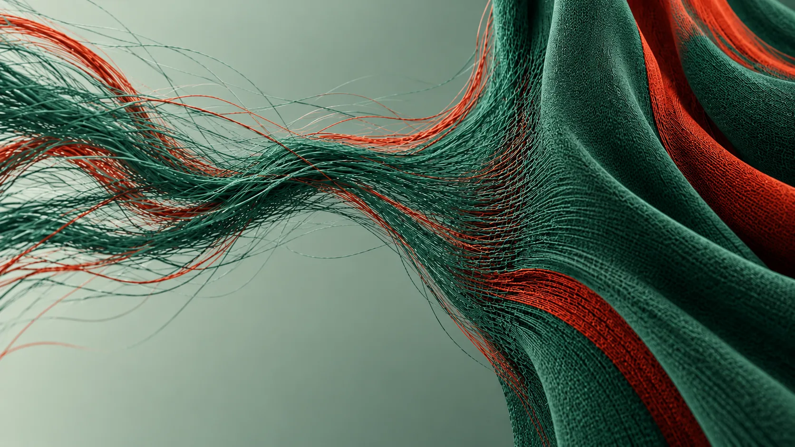
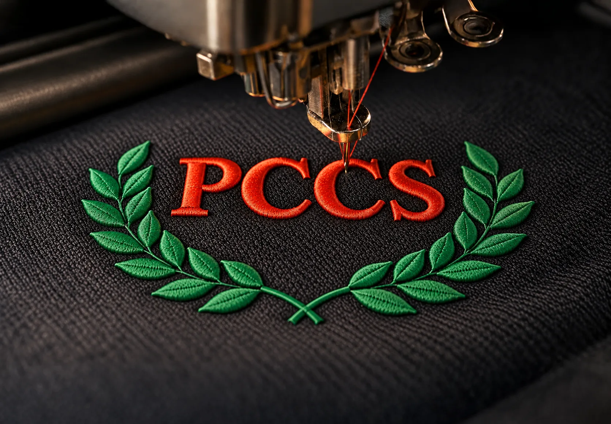
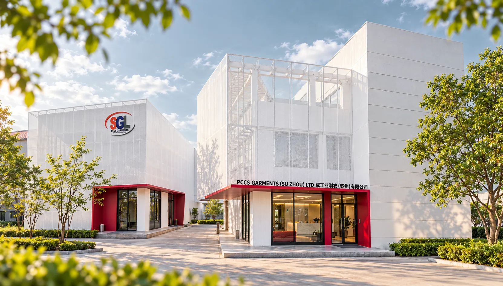

Sustainability
Made responsibly, measured honestly. Sustainability reporting since FY2018, in line with Bursa Malaysia's Listing Requirements.
Our commitments →
A sketch is the easy part. The work is everything that turns it into a million finished, branded, technically-real garments — the fabric, the fit, the mark that survives fifty washes. PCCS owns more and more of that chain. 你的概念，是一切的起点。真正的挑战，在于把它转化为百万件成品：有品牌、有技术、能承受五十次洗涤。面料、版型、标识，缺一不可。这条链，PCCS 自有的环节正越来越精。
Your brand is on the product. Our engineering is built into every detail.
The bridge between the drawing and the line. 好点子，只有变成可量产的技术方案，才算真正的好产品。
You bring a brief, a sketch, a reference. We turn it into a technical package a factory can build and samples you can approve.
你带来一份需求、一张草图、一个参考。我们将它转化为工厂可直接投产的技术流程，以及供你审定的实物样品——从图纸到生产线之间的每一步，由我们衔接落实。

We develop it to your spec and handle the mill side for you.
Stretch, wicking, weight, durability — every property is decided in the fabric, before a panel is cut. You don’t source a mill. We do.

That’s why PCCS controls more of it. Every link we own is one less risk for your brand.
Without cracking, lifting, or losing its edge.
That’s engineering, not decoration. We make marks that hold — the same capability the world’s biggest brands buy from us directly.

Fifty years on the floor. Every garment counts.
We check inline, during production, and before shipment. China for China, Cambodia and Vietnam for the West.

Finish, pack to spec, export and deliver — tracked. The last mile handled.
后整理、按规格包装、出口报关与配送，全程可追踪。最后一公里，由我们全程掌控。

Made responsibly, measured honestly. Sustainability reporting since FY2018, in line with Bursa Malaysia's Listing Requirements.
Our commitments →
Annual reports, financial statements and Bursa announcements — disclosed in accordance with listing requirements.
View investor relations →Come engineer what the world wears. Whatever your role, every decision you make is engineering.
See open roles →